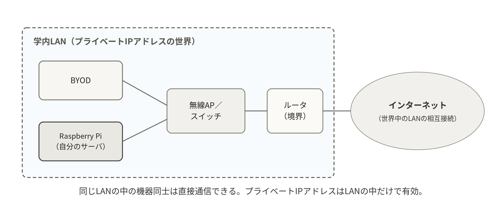
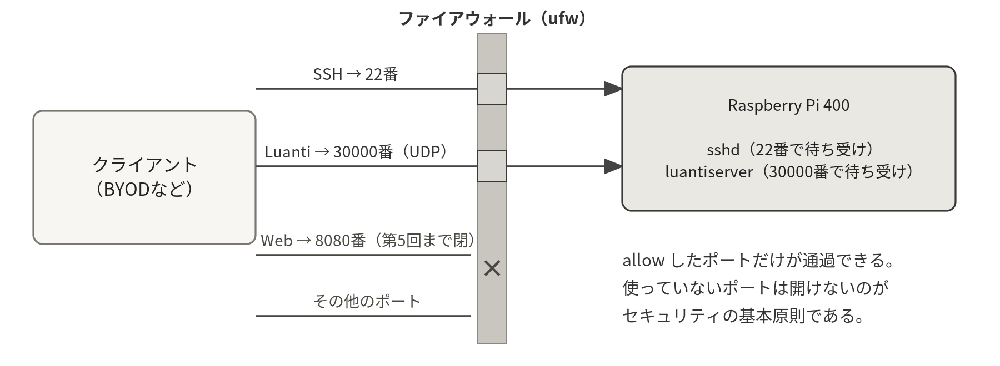
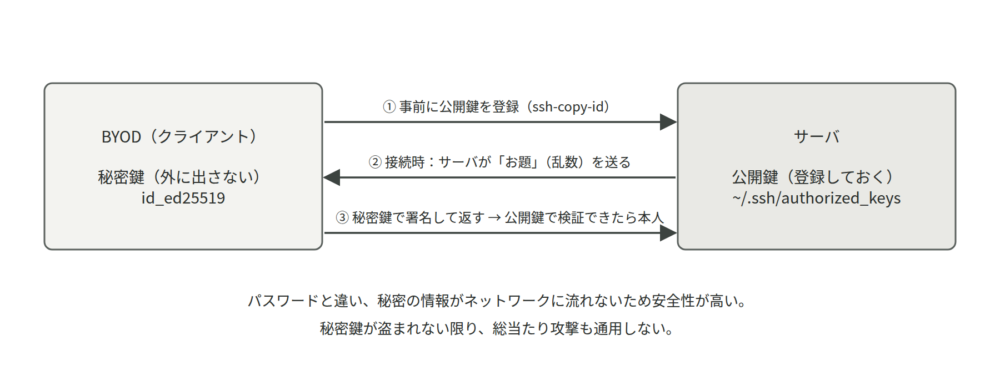

- LANとインターネットの関係、データがパケットに分けて運ばれること
- IPアドレスとDHCP、名前解決（DNSと「ホスト名.local」のmDNS）
- ポート番号とTCP/UDPの違い、ファイアウォールの「デフォルト拒否」
- SSHが何を暗号化し、公開鍵認証が何を証明しているか
7-1ネットワークとは：LANとインターネット
複数のコンピュータをつないで、互いにデータをやりとりできるようにしたものがネットワークである。部屋や建物の中など限られた範囲のネットワークをLAN（Local Area Network）と呼び、有線（イーサネット）または無線（Wi-Fi）で機器をつなぐ。そしてLAN同士を世界規模で相互接続したものがインターネットであり、LANとその外側の境界に立って通信を中継する機器がルータである。実習のBYODとRaspberry Piは、同じ学内LANに属しているからこそ直接通信できる。

ネットワーク上のデータは、丸ごと一塊で送られるのではなく、パケットという小包に分割されて運ばれる。各パケットには宛先と送信元の住所（IPアドレス）が記されており、途中の機器はそれを見てバケツリレーのように転送する。回線を占有しないため多数の通信が共存でき、一部のパケットが失われても再送でリカバリできる。この「小包＋住所」の仕組みの上に、以降で説明するIPアドレス・ポート・プロトコルの話がすべて載っている。
7-2IPアドレスとDHCP
ネットワーク上の機器は、IPアドレスという番号で識別される。IPv4アドレスは 10.20.30.41 のように4つの数値（各0〜255）で表される。このうち 10.x.x.x、172.16〜31.x.x、192.168.x.x はプライベートアドレスと呼ばれ、組織内ネットワーク専用に使われる。
学内Wi-Fiで自分のサーバに割り当てられるのもプライベートアドレスであり、だからこそ学外からは直接アクセスできない（本実習のサーバが学内限定公開なのはこの性質による）。
IPアドレスを機器に割り当てる方法には、手動で固定する方法と、DHCPサーバから自動で借りる方法がある。実習環境はDHCPであり、アドレスは「リース（貸与）」されている。リースには期限があるが、同じネットワークにいる限り同じアドレスが再貸与されることが多い。とはいえ「変わりうる」ことに変わりはないため、実習ではIPアドレスではなく名前で接続する方法を基本とした。
- IPアドレスIP address
- ネットワーク上の機器を識別する番号。
10.20.30.41のように4つの数値で表す。実習で使う10.x.x.xなどはプライベートアドレスで、組織の外からは直接届かない。
- DHCPDynamic Host Configuration Protocol
- IPアドレスを機器に自動で貸し出す仕組み。実習環境もこれなので、サーバのIPアドレスは電源を入れ直すと変わることがある。
7-3名前解決：DNSとmDNS
人間が扱いやすい名前（www.example.com）を機器が扱うIPアドレスに変換する仕組みを名前解決という。インターネット全体の名前解決を担うのがDNS（Domain Name System）で、世界中に分散した階層型のデータベースになっている。
一方、実習で使った「ホスト名.local」（第1回 1-3）はmDNS（multicast DNS）という別の仕組みである。mDNSはDNSサーバを必要とせず、「mc-24s1234という名前の機器はいますか？」という問いかけを同じネットワーク全体に投げかけ（マルチキャスト）、本人が「私です。IPアドレスは10.20.30.41です」と応答する。サーバ側ではavahiというサービスがこの応答を担当している。同じLANの中でしか使えないが、設定なしで名前解決できる手軽さが利点である。
- mDNSmulticast DNS / .local
- DNSサーバを使わず、同じLANの中に呼びかけて名前からIPアドレスを調べる仕組み。「ホスト名.local」で接続できるのはこれのおかげで、サーバ側ではavahiが応答している。
ホスト名.local で繋がらないので、サーバが壊れている
mDNSは同じLANの中でしか働かず、端末やネットワークの設定によっては使えないことがある。サーバ側で hostname -I を実行してIPアドレスを調べ、そのIPアドレスで接続すれば切り分けができる。繋がるならサーバは動いており、名前解決だけの問題である。
実習環境はDHCPなので、アドレスは貸与であり変わりうる。IPアドレスが通らなくなったら、まず現在のアドレスを調べ直すこと。
7-4TCP/UDPとポート番号
1台のサーバは複数のサービス（SSH、Luanti、Webなど）を同時に提供する。そこで通信の宛先には、IPアドレス（どの機器か）に加えてポート番号（機器の中のどのサービスか）を指定する。マンションの住所（IPアドレス）と部屋番号（ポート番号）の関係だと考えるとよい。サービス側は特定のポートで「待ち受け」ており、ss -tlnp コマンドで現在待ち受け中のポート一覧を確認できる。
- ポート番号port
- 1台の機器の中で、どのサービス宛ての通信かを区別する番号。SSHは22番、Luantiは30000番を使う。開いているポートは外部からの入口でもある。
| ポート | サービス | 備考 |
|---|---|---|
22 | SSH | 遠隔ログイン |
80 / 443 | HTTP / HTTPS | Web。実習ではnginxコンテナを8080で公開した（第5回 5-4） |
123 | NTP | 時刻同期 |
30000 | Luanti（ゲームサーバ） | UDPを使用。実習で構築したサーバの待ち受けポート |
通信方式にはTCPとUDPの2種類がある。TCPは相手との接続を確立し、届いたかを確認しながら送る「確実さ重視」の方式で、SSHやWebが使う。UDPは確認なしで送りっぱなしにする「速度重視」の方式で、動画配信や、位置情報を高頻度でやりとりするオンラインゲーム（Luantiもこちら）が使う。
LuantiはUDPを使う。sudo ufw allow 30000/tcp ではゲームの通信は通らず、30000/udp を開ける必要がある（第2回 2-6）。ss -ulnp でUDPの待ち受けを確認すると状況がはっきりする。
7-5ファイアウォール

ファイアウォールは、ポート単位・送信元単位で通信を許可・遮断する仕組みである。セキュリティの基本は「デフォルト拒否」、つまりすべてを閉じたうえで必要なポートだけを開けることである。ufw（Uncomplicated Firewall）はLinuxのファイアウォール機能（カーネル内のnetfilter）を簡単に操作できるようにしたツールで、実習では22番と30000番（第5回で8080番）だけを開けた。
開いているポートはそれぞれが攻撃の入口になりうるため、「そのポートは本当に外部に公開する必要があるか」を常に考える習慣をつけてほしい。使っていないポートを開けない理由はまさにこれである。
なお、第5回で使うDockerには注意がある。Dockerが公開するポート（composeの ports:）はカーネルの転送ルールを直接操作するため、ufwの許可・拒否を経由しない。コンテナのポートは「ufwで閉じたつもり」でも外から届く。公開の可否は ports: の記述そのもので制御するのが基本である。
- ファイアウォールufw
- ポート単位で通信を通すか遮断するかを決める仕組み。「まず全部閉じて、必要な分だけ開ける」（デフォルト拒否）が設計の基本である。
7-6SSHの仕組み
SSH（Secure Shell）は、通信をすべて暗号化して遠隔操作を行うプロトコルである。暗号化のおかげで、同じネットワークにいる第三者が通信を盗み見てもパスワードや操作内容は読み取れない。
初回接続時に表示される「fingerprint」の確認は、接続先が本物のサーバか（偽物にすり替わっていないか）を検証する仕組みで、サーバの「ホスト鍵」の指紋を照合している。2回目以降に何も聞かれないのは、BYOD側の ~/.ssh/known_hosts に指紋が記録され、自動照合されているからである。

ユーザ認証には、パスワード認証のほかに公開鍵認証がある。鍵ペア（公開鍵と秘密鍵）を作り、公開鍵をサーバに登録しておくと、接続時にサーバが出す「お題」に秘密鍵で署名して応えることで本人確認が行われる。秘密の情報が通信路に流れないためパスワードより安全であり、実務のサーバではパスワード認証を無効化して公開鍵認証のみとするのが標準である。
公開鍵認証への切り替えは実習の第3回 3-7で行う（ssh-keygen で鍵ペア作成、ssh-copy-id で登録）。さらにパスワード認証そのものを無効化する堅牢化（/etc/ssh/sshd_config で PasswordAuthentication no）は、最終課題のセキュリティ強化テーマで挑戦してほしい。
- 公開鍵認証ssh-keygen / ssh-copy-id
- 公開鍵と秘密鍵のペアを使い、秘密鍵を通信路に流さずに本人であることを証明する方式。公開鍵はサーバに配ってよいが、秘密鍵は決して外に出さない。
鍵を登録しただけでは、パスワード認証も有効なままである。本当に閉じるには sshd_config の PasswordAuthentication no が必要で、そのときは別のSSH接続を開いたまま作業すること。設定を誤ると自分が締め出される。
サーバに登録するのは公開鍵（.pub が付くほう）である。秘密鍵は手元の端末に置いたままにし、他人に渡さない。ssh-copy-id を使えば正しいほうが自動で登録される。
7-7ネットワークの調査と転送（ping・ss・wget/curl・scp）
ネットワークまわりの道具は「疎通を確かめる」「待ち受けを確かめる」「ファイルを運ぶ」の3種類に整理できる。第2回 2-7の相互接続演習の切り分け（ping → systemctl status → ufw status）に、ss を加えると診断がさらに正確になる。
| コマンド | はたらき |
|---|---|
ping ホスト | 疎通確認（Ctrl+Cで停止）。届かないなら電源・Wi-Fi・名前解決を疑う |
ip a ／ hostname -I | 自分のIPアドレスとネットワークインタフェースの確認 |
ss -tlnp ／ ss -ulnp | 待ち受け中のポート一覧（t=TCP、u=UDP）。「そのポートを誰が使っているか」まで表示 |
wget URL | ファイルのダウンロード（第1回 1-6の quest.tar.gz で使用） |
curl URL ／ curl -O URL | 内容を画面に表示／ファイルに保存。Web APIの動作確認にも使える |
scp コピー元 コピー先 | SSH経由の暗号化ファイル転送 |
scp luanti@mc-24s1234.local:~/backup/world_最新.tar.gz . # サーバ → 手元（BYOD側で実行）
scp ./memo.txt taro@mc-24s1234.local:~/ # 手元 → サーバ※ scpの実体はSSHであり、追加の設定なしに暗号化転送ができる。第4回の発展課題「バックアップを別マシンに転送（3-2-1ルールへの一歩）」は、この1行で実現する。
7-8ネットワークを調べるコマンド
ここから先は冊子には無い補足である。ネットワークの障害調査は「自分の足元」「相手までの経路」「相手のサービス」の順に外側へ広げていくのが鉄則で、それぞれに対応する道具がある。まず足元を見る道具から順に使い方を身につけよう。
自分のアドレスと経路を見る（ip / hostname）
ip はLinuxでネットワーク設定を確認・変更する標準コマンドである。サーバ管理者が最初に打つのはたいてい ip a（アドレス一覧）と ip r（経路表）で、「自分にアドレスが付いているか」「外に出る出口が決まっているか」を一度に確認できる。古い資料にある ifconfig はDebian 12では既定で入っていないので、ip を覚えるのが正解である。
ip a # すべてのインタフェースとアドレス
ip -br a # 1行1インタフェースの要約表示
ip r # 経路表（デフォルトゲートウェイの確認）
hostname -I # 自分のIPアドレスだけを手早く知る| 書式 | 意味 | 例 |
|---|---|---|
ip a | ip address show の略。全インタフェースのアドレスを表示 | ip a |
ip -br a | brief（要約）表示。名前・状態・アドレスだけを1行で | ip -br a |
ip a show 名前 | 指定したインタフェースだけを表示 | ip a show wlan0 |
ip r | ip route show の略。経路表を表示 | ip r |
ip -4 a | IPv4だけに絞る（-6 ならIPv6だけ） | ip -4 a |
hostname -I | 割り当て済みIPアドレスを空白区切りで1行表示 | hostname -I |
ip -br a
lo UNKNOWN 127.0.0.1/8 ::1/128
eth0 UP 10.20.30.41/24 fe80::dea6:32ff:fe12:3456/64
wlan0 DOWN
ip r
default via 10.20.30.1 dev eth0 proto dhcp src 10.20.30.41 metric 100
10.20.30.0/24 dev eth0 proto kernel scope link src 10.20.30.41 metric 100見るべき点は3つである。第1に、使っているインタフェース（有線なら eth0、無線なら wlan0）が UP になっているか。DOWN ならケーブルか無線の接続からやり直す。第2に、そのインタフェースに 10.20.30.41/24 のようなIPv4アドレスが付いているか。付いていなければDHCPからアドレスをもらえていない。第3に、ip r の1行目に default via の行があるか。この行が無いと、同じLANの中とは話せても外には一切出られない。lo（127.0.0.1）は自分自身を指す特別なインタフェースで、常に存在する。
※ 第1回 1-3 SSHでサーバに接続するで「ホスト名.local」が通らないとき、サーバ本体の画面で hostname -I を実行してIPアドレスを調べる場面がこれにあたる。ip -br a まで見ておくと、そもそもアドレスが付いていないのか、名前解決だけの問題なのかを即座に切り分けられる。
相手まで届くかを確かめる（ping / traceroute / nc）
足元が正常だと分かったら、次は相手まで届くかである。ping は相手に小さなパケットを投げて返事を待つ最も基本的な疎通確認で、traceroute は途中の経路のどこまで届いているかを1台ずつ表示する。nc（netcat）はさらに一歩進めて「そのポートが開いているか」まで確かめられる。
ping -c 4 10.20.30.41 # 4回だけ送って自動終了する
ping -c 4 -W 1 ホスト名.local # 1回あたり最大1秒で見切りをつける
sudo apt install -y traceroute # 初回のみ
traceroute -n 8.8.8.8 # 経路を番号で表示（-n は名前解決をしない）
nc -zv 10.20.30.41 22 # 22番ポートが開いているかだけ調べる| オプション | 意味 | 例 |
|---|---|---|
ping -c 回数 | 指定回数で自動終了する。付けないとCtrl+Cまで止まらない | ping -c 4 10.20.30.1 |
ping -W 秒 | 1回の応答待ち時間の上限。切り分けを急ぐときに短くする | ping -c 2 -W 1 ホスト |
ping -i 秒 | 送信間隔。既定は1秒 | ping -c 10 -i 2 ホスト |
traceroute -n | 各ホストの名前を引かずIPアドレスのまま表示。速く、名前解決の影響も受けない | traceroute -n 8.8.8.8 |
nc -z | データを送らず接続可否だけを調べる（スキャンモード） | nc -z 10.20.30.41 30000 |
nc -v | 結果を人間向けに表示する。-z と組で使う | nc -zv ホスト 22 |
nc -u | UDPで調べる。ただしUDPは無反応と成功の区別が付きにくい | nc -zuv ホスト 30000 |
ping -c 3 10.20.30.42
PING 10.20.30.42 (10.20.30.42) 56(84) bytes of data.
64 bytes from 10.20.30.42: icmp_seq=1 ttl=64 time=1.83 ms
64 bytes from 10.20.30.42: icmp_seq=2 ttl=64 time=2.11 ms
64 bytes from 10.20.30.42: icmp_seq=3 ttl=64 time=1.94 ms
--- 10.20.30.42 ping statistics ---
3 packets transmitted, 3 received, 0% packet loss, time 2003ms
nc -zv 10.20.30.42 22
Connection to 10.20.30.42 22 port [tcp/ssh] succeeded!ping で最も重要な行は最後の 0% packet loss である。ここが100%なら1つも返っていない。数パーセントの損失が続く場合は無線の電波状況を疑う。time=1.83 ms は往復にかかった時間で、同じLANなら数ミリ秒、遠いサーバなら数十ミリ秒が目安である。ttl=64 は相手のOSがLinux系であることの目安になるが、深追いは不要である。nc は succeeded! なら開いており、Connection refused なら相手は生きているがそのポートで待ち受けていない、無反応のまま止まるならファイアウォールに捨てられている可能性が高い。この3つの違いが切り分けの決め手になる。
※ 第2回 2-7 演習：サーバの相互接続で友人のサーバに繋がらないとき、ping が通るのに接続できないなら原因はサービスかファイアウォールに絞られる。そこで nc -zuv 相手のホスト 30000 や、相手側での sudo ufw status に進むとよい。
ping が通らないから、そのサーバは落ちている
ping が使うICMPというプロトコルは、ファイアウォールで遮断されていることが珍しくない。クラウドのサーバや一部の学内ネットワークでは既定で落とされる。ping は「通れば生きている」証拠にはなるが、「通らない＝死んでいる」証拠にはならない。ポート単位で確かめる nc -zv と併用すること。
ping は通るのにSSHできないので、ネットワークがおかしい
ここまで切り分けできていれば、ネットワークの経路は正常である。残る容疑者は相手側の sshd が動いていないか、22番がファイアウォールで閉じているかの2つで、sudo systemctl status ssh と sudo ufw status を順に見ればよい。
待ち受けているポートを調べる（ss）
ss は「このサーバのどのポートで、どのプログラムが通信を待っているか」を一覧するコマンドである。サービスを立ち上げた直後の確認、意図せず外に開いているポートの棚卸し、ポート番号の衝突調査という3つの場面で使う。旧来の netstat の後継にあたる。
ss -tulnp # TCPとUDPの待ち受けを、プロセス名付きで表示
sudo ss -tulnp # プロセス名まで見るにはsudoが要る
sudo ss -tlnp # TCPだけ（SSHやWeb）
sudo ss -ulnp # UDPだけ（Luanti）
sudo ss -tlnp 'sport = :22' # 22番に絞り込む| オプション | 意味 | 例 |
|---|---|---|
-t | TCPを対象にする | ss -tln |
-u | UDPを対象にする。Luantiの確認には必須 | ss -uln |
-l | 待ち受け（LISTEN）中のものだけ表示する | ss -tl |
-n | ポート番号を名前に直さず数字のまま表示する | ss -tln |
-p | そのポートを使っているプロセス名とPIDを表示する（要sudo） | sudo ss -tlnp |
-a | 待ち受けだけでなく接続中のものも含める | ss -ta |
sudo ss -tulnp
Netid State Recv-Q Send-Q Local Address:Port Peer Address:Port Process
udp UNCONN 0 0 0.0.0.0:30000 0.0.0.0:* users:(("luantiserver",pid=921,fd=8))
tcp LISTEN 0 128 0.0.0.0:22 0.0.0.0:* users:(("sshd",pid=512,fd=3))
tcp LISTEN 0 128 [::]:22 [::]:* users:(("sshd",pid=512,fd=4))読むべき列は Netid、Local Address:Port、Process の3つである。Netid が udp か tcp かは、ファイアウォールでどちらを開けるべきかに直結する。Local Address の 0.0.0.0 は「すべてのアドレスで待ち受ける」、つまり外部から到達できる状態を意味し、127.0.0.1 なら自分自身からしか繋がらない。[::] はIPv6側の同じ意味である。Process 欄のプログラム名とPIDが分かれば、「30000番を先に取っているのは誰か」といった衝突調査がその場で終わる。
※ 第2回 2-2で、パッケージ付属のサービスが30000番を先に取ってしまう問題を扱った。sudo ss -ulnp を見れば、30000番を掴んでいるプロセスのPIDまで判明するので、原因の特定が確実になる。
Webの応答を取ってくる（curl / wget）
curl はURLを指定して通信し、その結果を画面に出すコマンドである。Webサーバの動作確認、APIの試打ち、リダイレクトや証明書の調査に使う。wget はファイルをダウンロードして保存することに特化しており、用途で使い分ける。
curl -I http://localhost:8080/ # ヘッダだけ取得（動いているかの確認）
curl -s http://localhost:8080/ | head -n 20 # 本文の先頭だけ見る
curl -o page.html http://localhost:8080/ # 指定した名前で保存
curl -fsS -m 5 http://localhost:8080/ > /dev/null # 監視スクリプト向け（失敗時のみエラー、5秒で打ち切り）
wget http://localhost:8080/ # 元のファイル名で保存| オプション | 意味 | 例 |
|---|---|---|
-I | 本文を取らずヘッダだけ取得する。生死確認に最適 | curl -I http://localhost:8080/ |
-s | 進捗表示を黙らせる。パイプに繋ぐときの定番 | curl -s URL | head |
-f | 404などのエラー応答のとき終了コードを0以外にする | curl -fsS URL |
-m 秒 | 全体の制限時間。応答が無いまま固まるのを防ぐ | curl -m 5 URL |
-o 名前 | 指定した名前で保存する（-O はURL末尾の名前で保存） | curl -o a.html URL |
-L | リダイレクト（301や302）を追いかける | curl -L URL |
curl -I http://localhost:8080/
HTTP/1.1 200 OK
Server: nginx/1.25.3
Date: Mon, 12 Oct 2026 04:21:07 GMT
Content-Type: text/html
Content-Length: 1120
Last-Modified: Mon, 12 Oct 2026 04:00:11 GMT1行目の 200 OK が最重要で、これが出ていればWebサーバは正常に応答している。Server: でどのソフトが応えているか、Content-Length で中身が空でないか、Last-Modified で更新が反映されたかが分かる。curl: (7) Failed to connect なら誰も待ち受けていないかポートが塞がれており、curl: (28) は時間切れである。
※ 第5回 5-4 Web監視ページの公開でnginxコンテナを立ち上げたあと、ブラウザを開く前に curl -I http://localhost:8080/ を打つと、サーバ側で完結した確認ができる。ブラウザで見えないときも、これが 200 OK なら原因はサーバではなくBYODからの経路側にあると分かる。
7-9名前解決の全体像
7-3節ではDNSとmDNSの違いに触れた。ここでは、サーバ管理者が知っておくべき名前解決の全体像を整理する。名前からIPアドレスを引く経路は1本ではなく、優先順位のある複数の仕組みが順に試されている。この順番を知っていると、「あるマシンでは引けるのに別のマシンでは引けない」という不可解な現象の説明がつく。
問い合わせが通る順番と /etc/hosts
Linuxで名前を引くとき、まず参照されるのは /etc/nsswitch.conf に書かれた優先順位で、通常は「/etc/hosts ファイル、次にmDNS、最後にDNSサーバ」の順である。/etc/hosts は名前とIPアドレスを手書きで対応させる小さな表で、ここに書いた内容はDNSより優先される。少数のサーバを固定的に呼び合うときや、DNSが壊れているときの応急処置に使える。
127.0.0.1 localhost
127.0.1.1 mc-24s1234
10.20.30.42 mc-24s5678 mc-24s5678.localDNSサーバ自体のアドレスは、DHCPからもらった値が /etc/resolv.conf に書かれている。cat /etc/resolv.conf で nameserver 10.20.0.53 のような行が見えるはずで、この行が無いか宛先が誤っていると、インターネット上のどの名前も引けなくなる。
※ /etc/hosts の既存の行、特に 127.0.0.1 localhost と自分のホスト名の行は消さないこと。消すと sudo の実行が遅くなったり、一部のサービスが起動しなくなったりする。編集前に sudo cp /etc/hosts /etc/hosts.bak で控えを取る習慣をつけたい。
DNSの階層と再帰問い合わせ
DNSは世界中のサーバに分散した階層型のデータベースである。www.example.com を引くとき、実際には右から順に、ルートサーバが「com の担当はあちら」と教え、com の担当が「example.com の担当はあちら」と教え、最後に example.com の担当が実際のIPアドレスを答える。この橋渡しを代行してくれるのが、手元の端末が設定しているDNSサーバ（フルサービスリゾルバ）で、この代行のことを再帰問い合わせという。
一度引いた答えは、有効期限（TTL）の間キャッシュされる。だからこそ名前解決は速いのだが、逆にドメインの設定を変えても古い答えが返り続けることがある。「設定は変えたのに反映されない」の多くはこのキャッシュが原因である。
- DNSDomain Name System
- ドメイン名とIPアドレスを対応づける、世界中に分散した階層型のデータベース。手元の端末は代理のDNSサーバに問い合わせ、そのサーバが上位をたどって答えを集めてくる。
| レコード | 意味 | 例 |
|---|---|---|
A | 名前に対応するIPv4アドレス | example.com. A 93.184.216.34 |
AAAA | 名前に対応するIPv6アドレス | example.com. AAAA 2606:2800:220:1:248:1893:25c8:1946 |
CNAME | 別名。「この名前は実はあちらの名前である」と転送する | www.example.com. CNAME example.com. |
MX | そのドメイン宛メールを受け取るサーバ | example.com. MX 10 mail.example.com. |
NS | そのドメインを担当するDNSサーバ | example.com. NS a.iana-servers.net. |
TXT | 任意の文字列。ドメイン所有の証明などに使われる | example.com. TXT "v=spf1 ..." |
名前を引くコマンド（dig / getent hosts）
名前解決を調べるときは、「DNSサーバに直接聞く道具」と「OSの優先順位どおりに引く道具」を使い分ける。前者が dig、後者が getent hosts である。両者の答えが食い違ったら、/etc/hosts かmDNSが割り込んでいるということで、それ自体が有力な手がかりになる。
sudo apt install -y dnsutils # dig / nslookup を入れる（bind9-dnsutils が入る）
dig example.com # 既定のDNSサーバに聞く
dig +short example.com # 答えだけを簡潔に
dig @1.1.1.1 example.com # DNSサーバを指定して聞く（キャッシュの切り分け）
dig +short AAAA example.com # レコード種別を指定
getent hosts ホスト名.local # OSと同じ順番で引く（mDNSもここで効く）| 書式 | 意味 | 例 |
|---|---|---|
dig 名前 | A レコードを問い合わせ、応答の全体を表示する | dig example.com |
dig +short | 答えの値だけを表示する。スクリプト向き | dig +short example.com |
dig @サーバ | 問い合わせ先のDNSサーバを指定する | dig @1.1.1.1 example.com |
dig 種別 名前 | AAAA、MX、NS、TXT などを指定して引く | dig MX example.com |
dig -x IP | 逆引き。IPアドレスから名前を引く | dig -x 93.184.216.34 |
getent hosts 名前 | OSの解決順序（hosts、mDNS、DNS）に従って引く | getent hosts mc-24s5678.local |
dig example.com
;; ANSWER SECTION:
example.com. 1800 IN A 93.184.216.34
;; Query time: 12 msec
;; SERVER: 10.20.0.53#53(10.20.0.53) (UDP)
;; status: NOERROR, id: 45012ANSWER SECTION に行があれば名前は引けている。左から名前、TTL（この例では1800秒キャッシュしてよい）、クラス、レコード種別、値の順である。SERVER: は実際に答えたDNSサーバで、#53 はDNSのポート番号である。status: が NOERROR なら正常、NXDOMAIN は「その名前は存在しない」、SERVFAIL はDNSサーバ側の失敗を意味する。ANSWER SECTION が無く NXDOMAIN なら綴りの誤りを真っ先に疑う。
dig ホスト名.local が答えないので、mDNSが壊れている
dig はDNSサーバに直接問い合わせる道具なので、そもそもmDNSを使わない。.local の確認には getent hosts ホスト名.local や ping を使うこと。道具を取り違えると、正常な環境を壊れていると誤診してしまう。
順番に切り分ける。ping 8.8.8.8 のようにIPアドレス宛が通るのに名前だけ引けないなら、確かに名前解決の問題である。IPアドレス宛も通らないなら、原因は経路やゲートウェイの側にあり、DNSは無関係である。
7-10IPアドレスの読み方
7-2節でIPアドレスとDHCPの概要を扱った。ここではもう一歩踏み込んで、10.20.30.41/24 という表記が何を意味するのか、なぜ学外から自分のサーバに届かないのかを説明する。ここは丸暗記ではなく「どこまでが同じ町内か」というイメージで理解するとよい。
サブネットと /24 の意味
IPv4アドレスは32ビットの数値で、前半が「ネットワーク部（どの町内か）」、後半が「ホスト部（町内の何番地か）」に分かれる。どこまでが前半かを示すのがサブネットマスクで、/24 は「先頭24ビットがネットワーク部」という意味である。10.20.30.41/24 なら 10.20.30. までが町内で、最後の数値が番地にあたる。同じ町内の相手には直接パケットを届けられ、違う町内が相手ならルータ（デフォルトゲートウェイ）に託す。ip r の出力が2行あったのは、この「直接届く範囲」と「それ以外の行き先」を表していたのである。
| 表記 | サブネットマスク | 同じ町内に入る台数（おおよそ） |
|---|---|---|
/24 | 255.255.255.0 | 254台（最もよく使われる） |
/16 | 255.255.0.0 | 65534台 |
/8 | 255.0.0.0 | 約1677万台 |
/32 | 255.255.255.255 | 1台のみ（特定のホストを指す書き方） |
各ネットワークの先頭アドレス（10.20.30.0）はネットワークそのものを指し、末尾（10.20.30.255）は全員宛のブロードキャストに予約されている。だから254台なのである。
- サブネットマスクsubnet mask / prefix
- IPアドレスのうち、どこまでが同じネットワークを指す部分かを決める指定。
/24なら先頭3つの数値が同じ相手には直接、違う相手にはルータ経由で届ける。
- デフォルトゲートウェイdefault gateway
- 同じネットワークにいない相手へパケットを託す出口のルータ。
ip rのdefault viaの行がこれで、この行が無いと外部のどこにも出られない。
プライベートアドレスとNAT
プライベートアドレス（10.0.0.0/8、172.16.0.0/12、192.168.0.0/16）はインターネット上では使えない、組織内専用の番号である。にもかかわらず学内のサーバからインターネットに出られるのは、NAT（Network Address Translation）という仕組みが境界のルータで働き、外へ出るパケットの送信元をルータ自身のグローバルアドレスに書き換えているからである。戻ってきた応答は、ルータが記録した対応表をもとに元の機器へ配送される。
この仕組みは「内側から始めた通信」しか対応表に載らない。だから外から中へ突然やってくる通信は行き先が分からず、届かない。これが「学外から自分のRaspberry Piに直接アクセスできない」理由であり、同時に素朴な防御としても働いている。外部に公開したいときは、ルータ側でポート開放（ポートフォワード）の設定をするか、グローバルアドレスを持つVPSを使うことになる。
- NATNetwork Address Translation
- プライベートアドレスをルータのグローバルアドレスに書き換えて外部と通信させる仕組み。内側から始めた通信しか戻り道が分からないため、外から中への接続は既定では届かない。
NATが防いでいるのは「外から突然来る通信」だけである。同じLANの中にいる機器からは普通に届くし、こちらから怪しいサイトに接続すれば通信は成立してしまう。学内LANも不特定多数が同居する場所であり、第5章 5-2の最小権限やパスワードの強度は、NATの内側でも同じように必要である。
DHCPと固定IPの使い分け
アドレスの決め方には、DHCPで借りる方法と、手動で固定する方法がある。クライアント機器はDHCPでよいが、他から接続される側であるサーバは、アドレスが変わると困る。実務では固定IPにするか、DHCPサーバ側で「このMACアドレスにはいつもこのアドレスを渡す」と予約する方法を取る。
Raspberry Pi OS（bookworm以降）はNetworkManagerがネットワークを管理しており、固定化は nmcli で行う。設定を誤るとSSHが切れて復旧にモニタとキーボードが必要になるため、本実習では扱わない。概要だけ示すと、nmcli connection show で接続の名前を調べ、その接続に対して ipv4.method manual、ipv4.addresses、ipv4.gateway、ipv4.dns を設定したうえで接続し直す、という手順になる。学内ネットワークでは管理者の許可なくアドレスを固定してはならない点にも注意したい。
nmcli connection show # 接続プロファイルの一覧
nmcli device status # インタフェースごとの状態
nmcli -f IP4 device show eth0 # 現在のIPv4設定の詳細※ ネットワーク設定の変更は、SSHで接続したまま行うと自分の接続ごと切れることがある。やむを得ず変更する場合は、サーバ本体にモニタとキーボードを繋いだ状態で行うか、元に戻す手順を先に紙に書いてから着手すること。
7-11SSHを使いこなす
7-6節ではSSHの仕組みを扱った。ここでは日々の運用で効いてくる実用的な使い方をまとめる。毎回長いコマンドを打つ必要はなく、設定ファイルを1つ書けばSSHもscpもrsyncも短い名前で呼べるようになる。
~/.ssh/config で接続先に名前を付ける
接続元（BYODや自分のPC）の ~/.ssh/config に接続先を登録しておくと、ssh mc のような短い指定で接続できる。ポート番号や鍵ファイル、ユーザ名も接続先ごとに覚えさせられるので、打ち間違いが激減する。ファイルが無ければ新規に作ってよい。
Host mc
HostName mc-24s1234.local
User taro
IdentityFile ~/.ssh/id_ed25519
ServerAliveInterval 60
Host mc-ip
HostName 10.20.30.41
User tarochmod 600 ~/.ssh/config # 自分だけが読める権限にしておく
ssh mc # これだけで接続できる
scp ./memo.txt mc:~/ # scpでも同じ名前が使える
ssh mc 'uptime' # 接続してコマンドを1つだけ実行して戻るServerAliveInterval 60 は60秒ごとに小さな信号を送って接続を維持する設定で、しばらく操作しないと切れてしまう環境で効く。Host の行の名前は自由に決めてよい。
よく使うオプションとポート転送
SSHの主なオプションは数えるほどしかない。特に -L によるポート転送は、「サーバの中からしか見えないサービスを、手元のブラウザで見る」ための強力な道具である。
| オプション | 意味 | 例 |
|---|---|---|
-p 番号 | 接続先のSSHポートを指定する（scpは大文字の -P） | ssh -p 2222 taro@host |
-i 鍵 | 使う秘密鍵のファイルを指定する | ssh -i ~/.ssh/id_ed25519 taro@host |
-v | 接続過程を詳しく表示する。認証が通らない原因調査に使う | ssh -v taro@host |
-L 手元:宛先:宛先ポート | 手元のポートをサーバ経由で転送する | ssh -L 8080:localhost:8080 taro@host |
-N | シェルを開かず転送だけ行う。-L と組で使う | ssh -N -L 8080:localhost:8080 taro@host |
-t | リモートで対話的なコマンドを動かすときに端末を割り当てる | ssh -t taro@host 'sudo journalctl -f' |
ssh -N -L 8080:localhost:8080 taro@mc-24s1234.local # この端末はつないだままにする
（別の端末やブラウザから http://localhost:8080/ を開くと、サーバ側の8080番に繋がる）この仕組みなら、サーバ側でファイアウォールを開けなくても手元から中身を確認できる。Ctrl+Cで転送を終了する。
scp と rsync でファイルを運ぶ
scp は1回きりのコピー、rsync は差分だけを送る繰り返しのコピーに向く。バックアップを別のマシンに置く運用では、2回目以降が圧倒的に速い rsync が定番である。
scp -r ~/backup taro@10.20.30.42:~/backup-from-mc # ディレクトリごと送る（-r）
scp -P 2222 ./memo.txt taro@host:~/ # ポート指定は大文字のP
rsync -avn ~/backup/ taro@10.20.30.42:~/backup-from-mc/ # -n で予行演習（何もコピーしない）
rsync -av ~/backup/ taro@10.20.30.42:~/backup-from-mc/ # 実行。差分だけ転送される
rsync -av -e 'ssh -p 2222' ~/backup/ taro@host:~/backup/ # SSHのポートを変えている場合| オプション | 意味 | 例 |
|---|---|---|
-a | 属性（所有者、時刻、権限）を保ったまま再帰的にコピーする | rsync -a src/ dst/ |
-v | 転送したファイル名を表示する | rsync -av src/ dst/ |
-n | 予行演習。実際には転送せず、何が起きるかだけ表示する | rsync -avn src/ dst/ |
-z | 転送中に圧縮する。低速な回線で効く | rsync -avz src/ dst/ |
--delete | 送り元に無いファイルを送り先から削除する（危険） | rsync -av --delete src/ dst/ |
-e コマンド | 転送に使うリモートシェルを指定する | rsync -av -e ssh src/ host:dst/ |
※ rsync の --delete は送り先を送り元に合わせて削除する。送り元のパスを打ち間違えたまま実行すると、送り先のファイルが消える。必ず先に -n を付けて予行演習し、表示された内容を確認してから本番を実行すること。末尾のスラッシュの有無で意味が変わる点にも注意が必要で、~/backup/ は「中身を」、~/backup は「そのディレクトリごと」を意味する。
known_hosts と鍵の管理
初回接続で確認したサーバの指紋は、接続元の ~/.ssh/known_hosts に保存される。サーバを作り直すと指紋が変わるため、次の接続時に大きな警告が出て接続を拒否される。これは「偽のサーバにすり替わっていないか」を守る大切な機能なので、警告そのものは正常な動作である。自分でOSを入れ直したなど心当たりがあるときだけ、古い記録を消してやり直す。
ssh-keygen -R mc-24s1234.local # そのホストの記録だけを削除
ssh-keygen -R 10.20.30.41 # IPアドレスで記録されている分も削除
ssh mc-24s1234.local # 再接続し、指紋を確認してyesと答える鍵そのものの管理では、次の3点を守れば大きな事故は起きない。第1に、秘密鍵（id_ed25519、.pub の付かないほう）は絶対に他人に渡さず、クラウドストレージや公開リポジトリにも置かない。第2に、鍵を作るときはパスフレーズを付ける。第3に、権限を正しくする。~/.ssh は700、秘密鍵は600、authorized_keys は600でないとSSHは鍵を拒否する（理由は第5章 5-3のパーミッションのとおりである）。
※ 鍵ペアの作成と登録は第3回 3-7 SSHを公開鍵認証に切り替えるで行う。~/.ssh/config の作成はそこまで進んだあとに取り組むと、IdentityFile の意味がそのまま理解できる。
7-12HTTPとTLSの基礎
Webは最も身近なネットワークサービスであり、第5回で公開する稼働状況ページもHTTPで配信されている。ここではサーバ管理者として最低限知っておきたいHTTPの構造と、HTTPSが何を守っているのかを整理する。
リクエストとレスポンス
HTTPは「クライアントが要求（リクエスト）を1つ送り、サーバが応答（レスポンス）を1つ返す」という、驚くほど単純な文字のやりとりである。要求はメソッド（GET や POST）とパス、ヘッダからなり、応答はステータス行、ヘッダ、本文からなる。ブラウザが画面に描いているのは、この応答の本文（HTML）である。
| ステータス | 意味 | サーバ管理者としての読み方 |
|---|---|---|
200 OK | 成功 | 正常。まずここを目指す |
301 / 302 | 移動した（リダイレクト） | curl -L で追わないと本文が空に見える |
403 Forbidden | 権限が無い | ファイルの権限や、Webサーバの設定を疑う |
404 Not Found | そのパスに何も無い | URLの綴りか、置き場所のディレクトリが違う |
500 系 | サーバ内部のエラー | クライアントではなくサーバ側の問題。ログを読む |
502 / 504 | 後ろ側のサービスが応答しない | コンテナやアプリが落ちていないか確認する |
大まかには、4で始まる番号は要求した側の問題、5で始まる番号はサーバ側の問題である。この区別だけでも、原因を探す場所が半分に絞れる。
- ステータスコードHTTP status code
- HTTPの応答の1行目に付く3桁の番号。200番台は成功、300番台は移動、400番台は要求側の誤り、500番台はサーバ側の障害を表す。
curl -v でやりとりを覗く
実際のやりとりは curl -v で見える。> で始まる行が自分が送った要求、< で始まる行がサーバから返ってきた応答である。教科書の図より、この生の出力を一度見ておくほうが理解が早い。
curl -v -s -o /dev/null http://localhost:8080/
* Trying 127.0.0.1:8080...
* Connected to localhost (127.0.0.1) port 8080
> GET / HTTP/1.1
> Host: localhost:8080
> User-Agent: curl/7.88.1
> Accept: */*
>
< HTTP/1.1 200 OK
< Server: nginx/1.25.3
< Content-Type: text/html
< Content-Length: 1120
<
* Connection #0 to host localhost left intact* で始まる行はcurl自身の説明である。Trying と Connected まで進んでいれば、TCPの接続そのものは成功している。ここで止まるならポートかファイアウォールの問題で、HTTPの話ではない。< HTTP/1.1 200 OK まで来ればサーバの設定は正しい。-o /dev/null は本文を捨てる指定で、ヘッダの流れだけを見たいときに便利である。
HTTPSは何を守っているか
HTTPSは、HTTPの通信をTLS（Transport Layer Security）で包んだものである。TLSが提供するのは次の3つで、この3点を区別できると「HTTPSだから安全」という雑な理解から抜け出せる。
- 暗号化：通信路の途中にいる第三者に中身を読ませない。
- 完全性：途中で書き換えられたら検知できる。
- 認証：接続先が名乗ったとおりのドメインの持ち主であることを確かめる。
3番目を支えているのがサーバ証明書である。証明書には「このドメインの公開鍵はこれである」と書かれ、認証局（CA）の署名が付いている。ブラウザやOSは信頼できる認証局の一覧をあらかじめ持っていて、その署名を検証することで証明書の正しさを確かめる。証明書には有効期限があり、期限切れはWebサイトの障害原因として非常にありふれている。
逆に、TLSが守らないものもはっきりしている。サーバの中身が安全かどうか、置いてあるファイルの権限が適切かどうか、そのサイトの運営者が善良かどうかは、TLSの関知するところではない。鍵マークは「通信路が保護されている」ことの印であって、「相手が信頼できる」ことの印ではない。
- TLSTransport Layer Security / HTTPS
- 通信を暗号化し、改ざんを検知し、接続先のドメインを証明書で確認する仕組み。HTTPをこれで包んだものがHTTPSである。守るのは通信路であって、サーバの中身の安全ではない。
公開サーバに証明書を用意する方法としては、Let's Encryptという無料の認証局と、その自動取得ツールであるcertbotが広く使われている。ドメイン名を持ち、インターネットから到達できるサーバがあれば、証明書の取得と自動更新まで自動化できる。ただし本実習のサーバは学内のプライベートアドレスにあり、インターネットから到達できないため、この手順は扱わない。仕組みとして「証明書は無料で自動更新できる時代になった」ことだけ知っておけば十分である。
証明書が証明しているのは「接続先が確かにそのドメインである」ことだけで、運営者の善良さは証明していない。詐欺サイトもHTTPSを使える。ドメイン名そのものを注意して読むことが最終的な防衛線である。
社内やLANの中だけならHTTPで十分である同じLANにいる第三者には通信が見えうるし、学内Wi-Fiも不特定多数が同居する場所である。パスワードや個人情報を扱うなら、内部向けでもHTTPSにするか、7-11のSSHポート転送のように別の手段で保護すべきである。
7-13ufw コマンドリファレンス
7-5節のとおり、ufwはファイアウォールを簡単に操作するためのツールである。日常的に使うのは状態確認と許可の追加、そして不要になった規則の削除の3つだけである。規則は上から順に評価されるのではなく、ufwが内部で整理するため、番号を指定した削除ができるように status numbered をまず覚えるとよい。
sudo ufw status verbose # 現在の状態と既定の方針を確認
sudo ufw status numbered # 番号付きで規則を一覧（削除の前に必ず）
sudo ufw allow 22/tcp # SSHを許可（これを忘れて有効化すると締め出される）
sudo ufw allow 30000/udp # LuantiはUDP
sudo ufw allow from 10.20.30.0/24 to any port 8080 proto tcp # 送信元を限定して許可
sudo ufw delete 3 # numbered で表示された3番の規則を削除
sudo ufw limit 22/tcp # 短時間に繰り返す接続を絞る（総当たり対策）| サブコマンド | 意味 | 例 |
|---|---|---|
status | 有効か無効か、どの規則があるかを表示する | sudo ufw status verbose |
status numbered | 規則に番号を付けて表示する。削除の前に使う | sudo ufw status numbered |
allow / deny | 指定したポートや送信元を許可、または拒否する | sudo ufw allow 8080/tcp |
delete 番号 | 番号で規則を削除する（delete allow 8080/tcp とも書ける） | sudo ufw delete 2 |
limit | 同じ送信元からの短時間の連続接続を制限する | sudo ufw limit 22/tcp |
default | 規則に当てはまらない通信の既定の扱いを決める | sudo ufw default deny incoming |
enable / disable | ファイアウォール自体を有効、無効にする | sudo ufw enable |
reset | すべての規則を消して初期状態に戻す | sudo ufw reset |
sudo ufw status numbered
Status: active
To Action From
-- ------ ----
[ 1] 22/tcp ALLOW IN Anywhere
[ 2] 30000/udp ALLOW IN Anywhere
[ 3] 8080/tcp ALLOW IN 10.20.30.0/24
[ 4] 22/tcp (v6) ALLOW IN Anywhere (v6)まず1行目の Status: active を見る。inactive なら規則を書いても何も効いていない。各行は左から番号、宛先のポート、動作、送信元である。From が Anywhere なら誰からでも入れる状態で、10.20.30.0/24 のようにネットワークが書かれていれば送信元が限定されている。(v6) の行はIPv6用に自動生成された対の規則なので、1つ許可すると2行増えるのが普通である。削除するときは、番号が振り直されるため、1つ消すたびに status numbered を取り直すこと。
※ sudo ufw reset はすべての規則を削除してufwを無効化する。作業前に sudo ufw status numbered の出力を実験記録に控えておくこと。また、SSHの規則を消したうえで有効化すると、その瞬間に自分が締め出されて、モニタとキーボードを繋がない限り復旧できなくなる。規則を触る前に sudo ufw status で22番の許可があることを必ず確かめる。
※ 第2回 2-6 ファイアウォールの設定で22番と30000番を開ける。第5回 5-4で8080番を扱うときは、7-5節で述べたとおりDockerが公開するポートはufwを経由しない点を思い出してほしい。